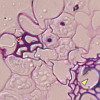
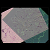
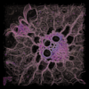

This page contains some demos illustrating the capabilities of the module Align Slices. This module can be used to register a stack of misaligned 2D physical cross sections. Note that there is also a tutorial about this topic.
 Alignment via landmarks
 Automatic alignment
 Volume rendering of the aligned stack